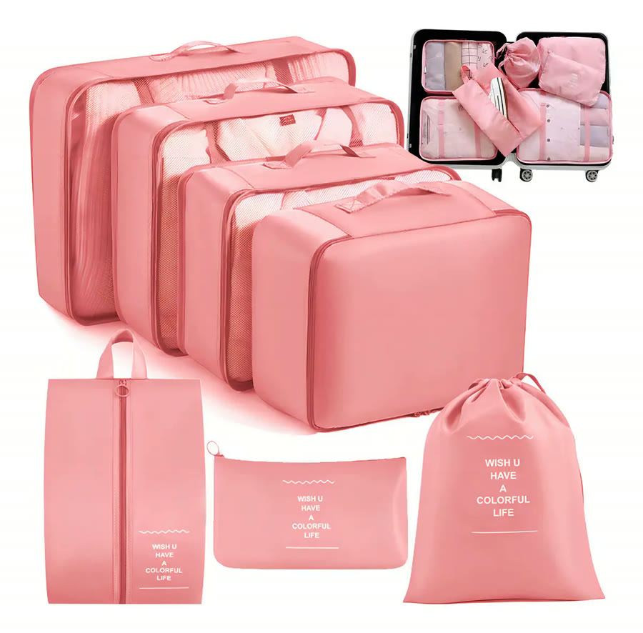
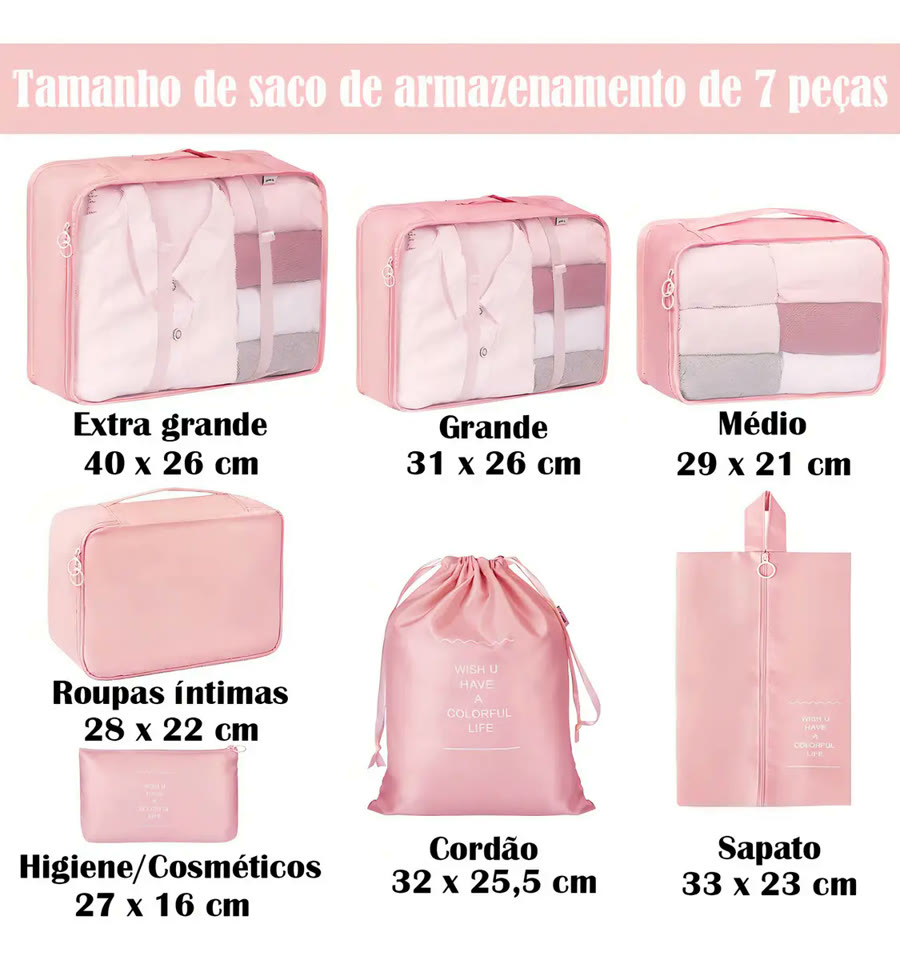
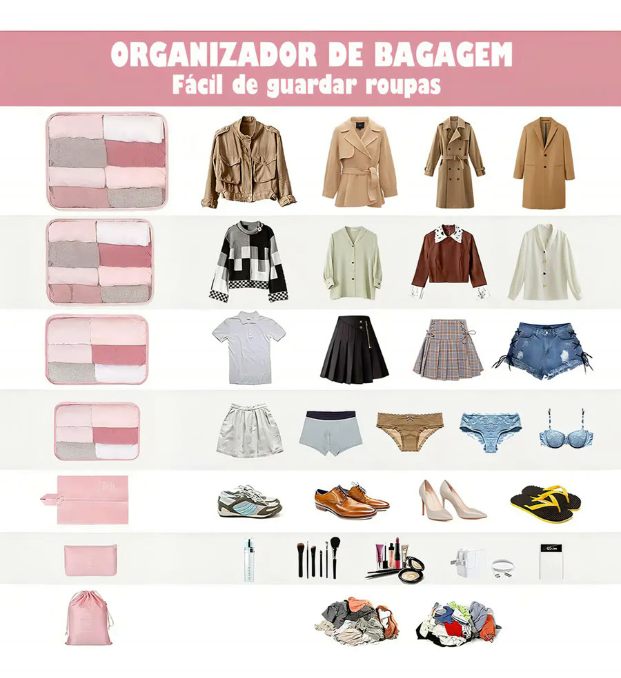
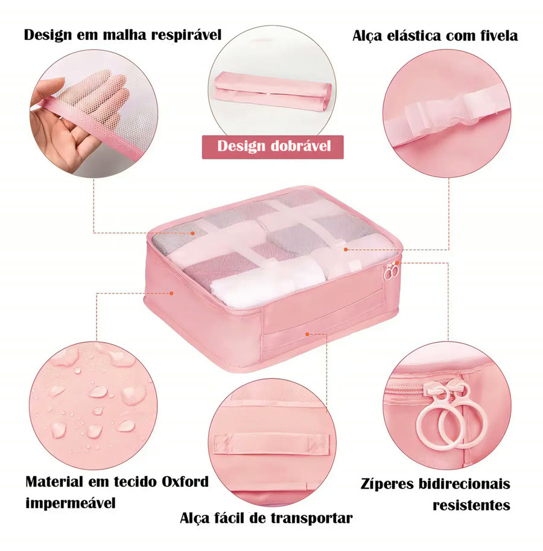
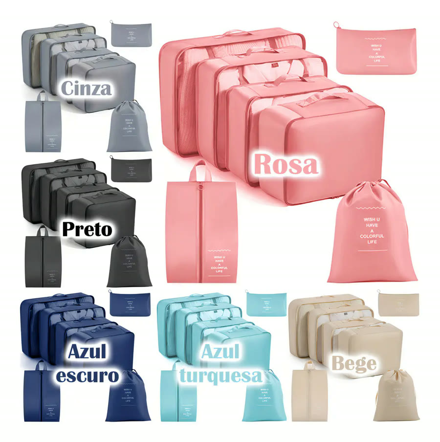
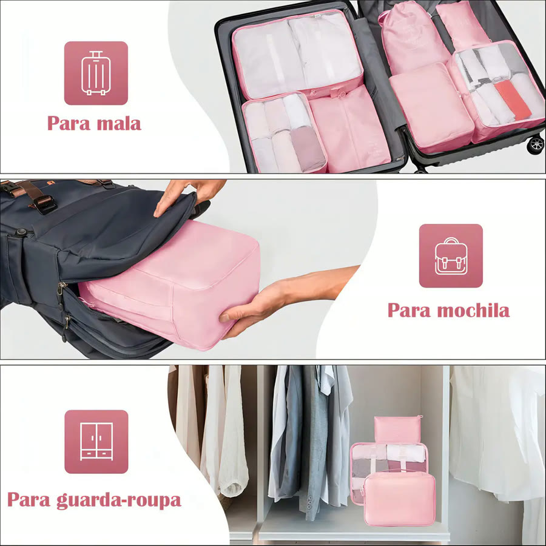
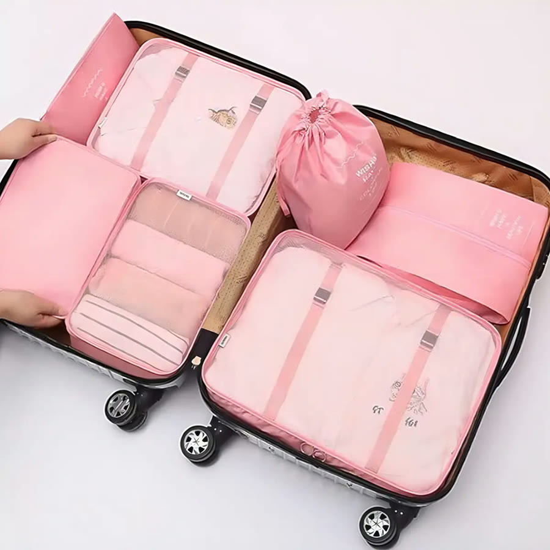

Achado nº 16
Kit organizador de mala com 7 bolsas







O que diz a página oficial do produto
- É um kit de 7 bolsas com zíper para organizar a roupa dentro da mala
- As peças: três bolsas de roupa (extra grande, grande e média), uma de roupas íntimas, uma de higiene, uma para sapato e uma bolsa de cordão para roupa suja
- A maior mede 40 cm por 26 cm
- É de tecido Oxford impermeável; as bolsas de roupa têm painel de tela por cima para ver o que tem dentro
- Tem alça de transporte e, segundo o anúncio, as bolsas dobram
- Vem nas cores rosa, cinza, preto, azul-escuro, azul-turquesa e bege
- No Mercado Livre, tem nota 4,8 com mais de 5 mil avaliações e mais de 10 mil vendidos
Link de afiliado: se você comprar por ele, a Achadaria pode receber uma comissão, sem custo extra para você. Preço, estoque e entrega são da loja e podem mudar; confira lá antes de comprar.